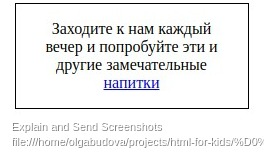
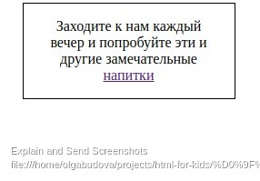
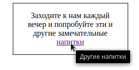
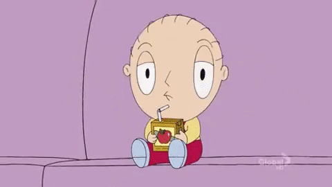
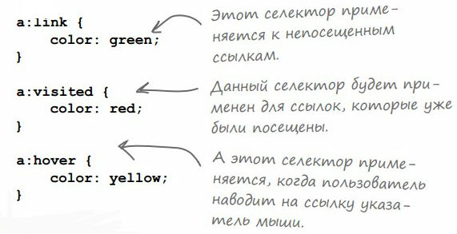

Элемент <a> и его разносторонняя личность
Заметили ли вы, что когда дело доходит до оформления,
ссылки немного отличаются от остальных элементов?
Ссылки — это хамелеоны мира элементов. В зависимости
от обстоятельств они могут мгновенно менять свой стиль.
Рассмотрим это подробнее
Элемент <a> и его разносторонняя личность

Вот ссылка, на которой вы никогда
не щелкали. Она называется непосещенной и по умолчанию имеет синий цвет.
Элемент <a> и его разносторонняя личность

А вот ссылка, на которой вы уже щелкали. Такие ссылки называют посещенными.
Обычно и те и другие ссылки отображаются разными цветами, чтобы можно
было видеть разницу между ними. В большинстве браузеров для
посещенных ссылок по умолчанию задан фиолетовый цвет.
Элемент <a> и его разносторонняя личность

Если вы наводите указатель мыши на ссылку и держите его над ней,
но не щелкаете кнопкой мыши, то указатель обычно меняет свой вид.
В некоторых браузерах вы даже можете увидеть всплывающую подсказку,
в которой выводится текст из атрибута title.
В отличие от стилей других элементов, стиль элемента <a> меняется в зависимости
от его состояния. Если на ссылке еще ни разу не щелкали, то она будет иметь один
стиль, а если щелкали — другой. Если же вы просто навели указатель мыши на ссылку,
то она может иметь третий стиль. Возможно, у элемента <a> даже больше стилей
оформления, чем можно заметить. Так и есть… давайте взглянем.

Как можно по-разному оформлять элементы с учетом их состояния?

Обратите внимание, что вслед за символом «a» идет
символ «:» (двоеточие), а затем задается состояние, которое мы хотим описать. Убедитесь, что у вас
в данных селекторах нет пробелов (иначе, например,
a: link не будет работать!)
a: link{ // Не правильно
color: yellow;
}
Для того, чтобы управлять разными состояниями ссылок используются псевдоклассы.
Недавно у псведокласса взяли интервью. Давайте ознакомимся с ним и узнаем, что же это такое? :)
Ведущий: Привет, Псевдокласс! Не мог бы ты
рассказать о том, откуда появилось твое имя?
Псевдокласс: Под «псевдо» обычно понимают
что-то, кажущееся настоящим, но таковым не
являющееся.
Ведущий: А фамилия? Класс?
Псевдокласс: Все вы знаете, что такое
CSS-классы. Это группы для размещения в них
элементов, позволяющие оформить всю группу
вместе. Объедините «псевдо» и «класс», и
получится «псевдокласс»: он работает как класс,
но на самом деле им не является
Ведущий: А что же в нем ненастоящего, если
он работает так же, как настоящий класс?
Псевдокласс: Хорошо, откройте HTML-файл
и найдите в нем класс :visited, :link или
:hover. Когда найдете, дайте мне знать.
Ведущий: Я не могу найти ни одного из них.
Псевдокласс: И тем не менее псевдоклассы
a:link, a:visited и даже a:hover
позволяют определить стиль так, будто являются классами.
Однако это псевдоклассы. Иными словами, псевдоклассы
можно оформить, но никто никогда не печатает их в
своем HTML-коде.
Ведущий: Итак, Псевдо, ты работаешь только
со ссылками?
Псевдокласс: Нет, я работаю и с другими элементами.
Современные браузеры уже поддерживают такие псевдоклассы,
как :active и :hover, для разных элементов. Кроме того,
существует еще несколько других псевдоклассов. Например,
псевдокласс :first-child предназначен
для определения дочерних элементов, например
первого абзаца в элементе <blockquote>.
Вы даже можете выбрать последний абзац в
<blockquote>с использованием псевдокласса
:last-child. На самом деле я довольно гибок
Ведущий: Отлично, мы, конечно же, вынесем
из этого интервью кое-что полезное для себя.
Спасибо, что был с нами, Псевдокласс.
Упражнение
- Создать страницу с 4-мя ссылками на сайты университетов Лиги Плюща.
- На 4 состояния ссылок: link, visited, hover, active изменить цвет текста.
- При состоянии hover пускай увеличивается размер шрифта.
- Обратите внимание на то, что вам придется
почистить журнал в браузере, чтобы увидеть цвет непосещенных ссылок.
- Задание *. Использовать свойсто transition для ссылки,
при котором переход одного цвета в другой будет плавно анимироваться